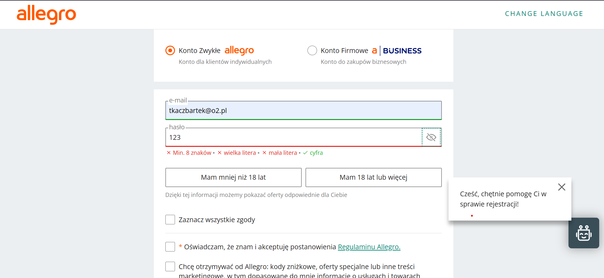

9. Pomóż użytkownikom rozpoznać, zdiagnozować i naprawić błędy
EN: Error messages should be expressed in plain language (no error codes), precisely indicate the problem, and constructively suggest a solution.
PL: Komunikaty o błędach powinny być wyrażone w prostym języku (bez kodów błędów), precyzyjnie wskazywać problem i konstruktywnie sugerować rozwiązanie.
Przykład - Strona WWW (Allegro)

Formularz rejestracji Allegro idealnie wskazuje miejsce błędu (czerwona ramka) i zamiast niezrozumiałego komunikatu systemu używa prostego języka. Od razu sugeruje też konstruktywne rozwiązanie – dynamicznie odznacza spełnione wymogi (zielony ptaszek przy cyfrze) i pokazuje na czerwono, co jeszcze trzeba dodać do hasła (wielka/mała litera, min. 8 znaków).
Przykład - Aplikacja Mobilna

Aplikacja nie zamyka się nieoczekiwanie przy braku sieci. Zamiast tego wyświetla przyjazny komunikat o braku połączenia, wyjaśniając powód błędu. Udostępnia również przycisk "Spróbuj ponownie", co pozwala użytkownikowi szybko wyjść z problematycznej sytuacji i odświeżyć widok.